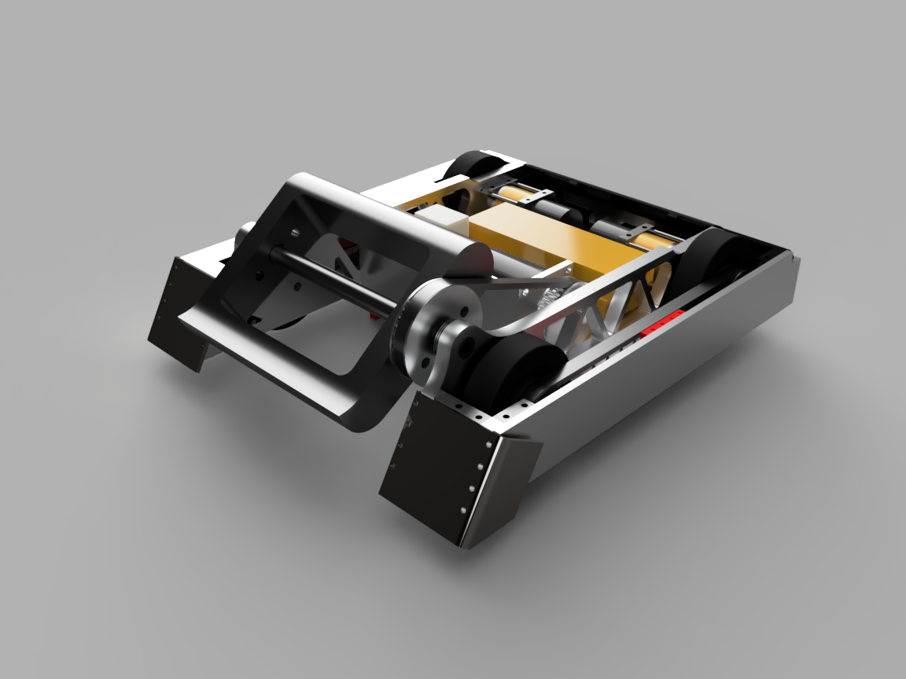
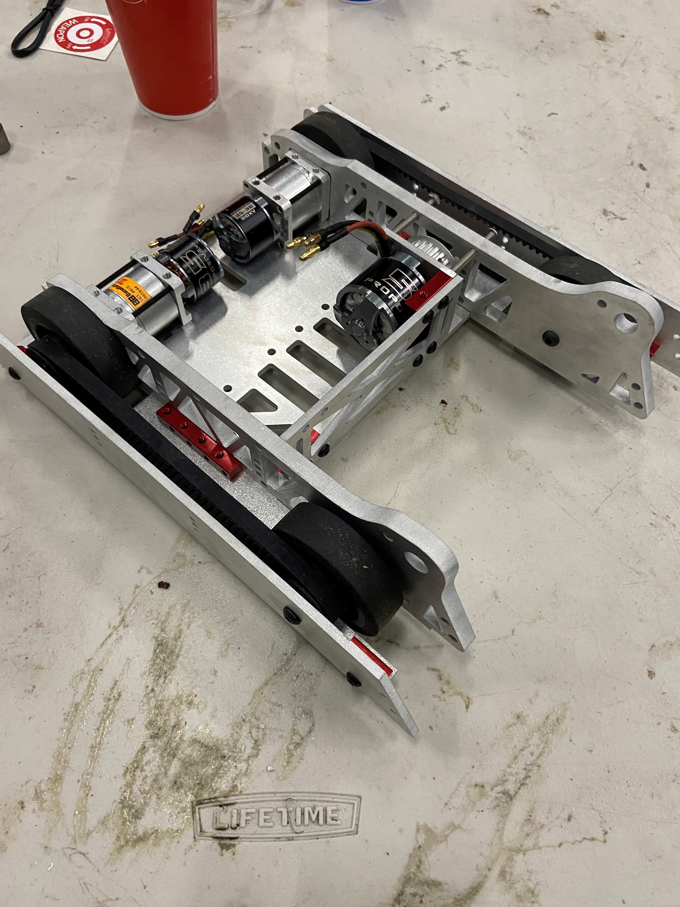
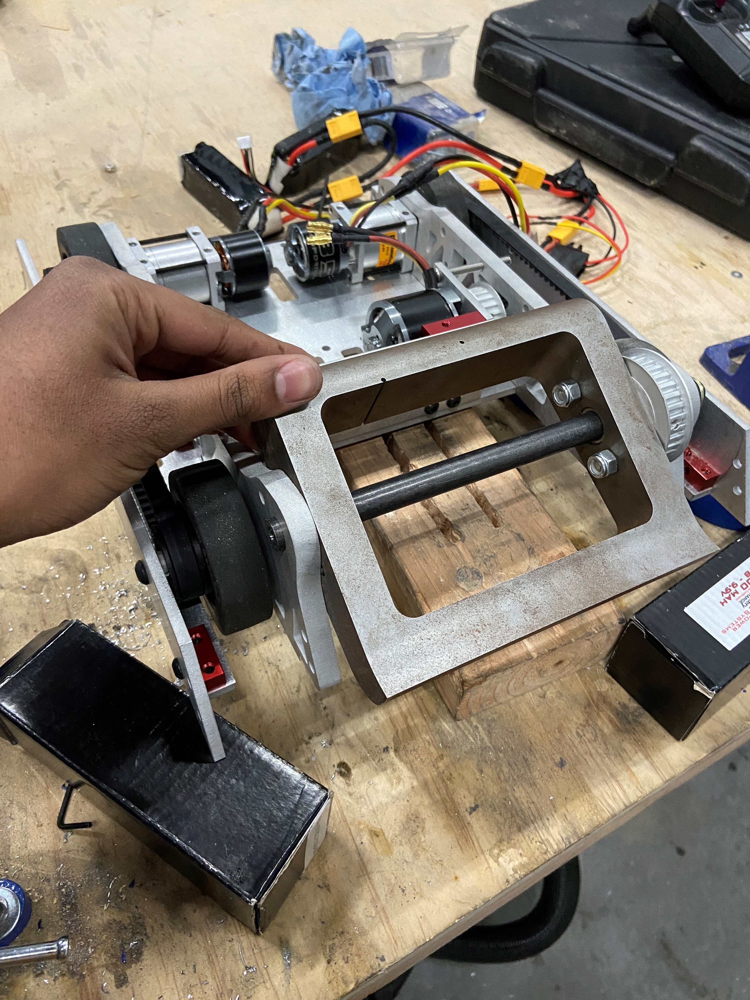
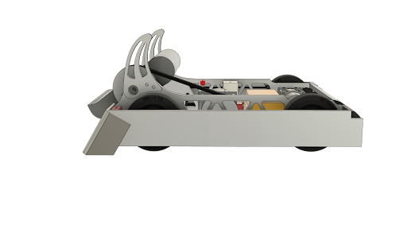
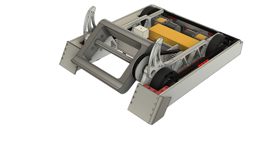
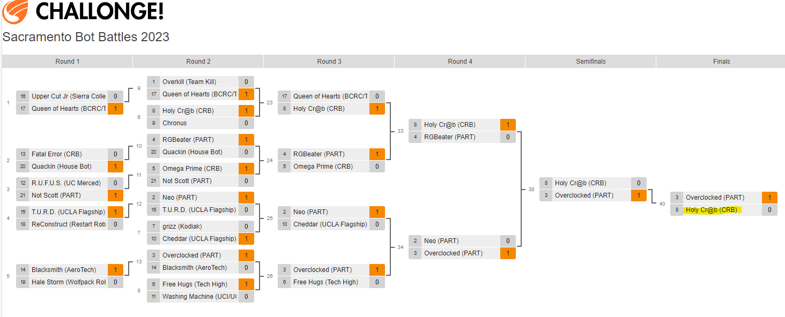
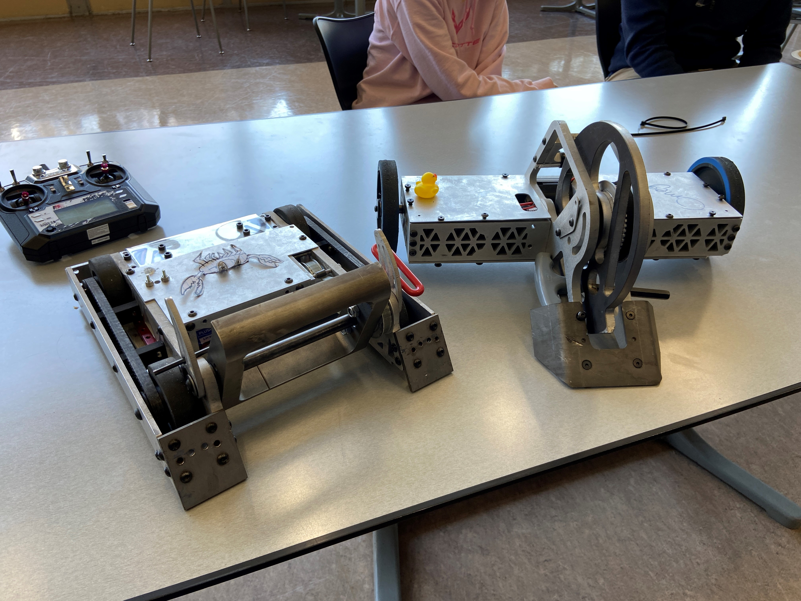
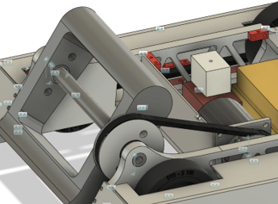

HOLY CR@B !!
Finalist 15 pound combat robot
Project Overview
As a member of CRB (Combat Robotics at Berkeley), my team and I designed and built a 15 pound combat robot for the Sacramento Bot Battles 2023, where we won 2nd place! In this tournament, 32 teams fought in a double elimination bracket, consisting of everywhere from high school seniors to experienced builders with decades of experience. HOLY CR@B went undefeated for its matches, losing only to a power management issue in the final rounds of the tourney. As Driver for the bot, I had a lot of fun being able to maneuver and strategize my team's hard work for the past 2 semesters! With a speedy 4 wheel drive and an egg beater style weapon, HOLY CR@B made it to the finals of the competition, with an impressive 4-2 KO count!
Image Gallery

Design Overview
As all good projects do, my team started with brainstorming and ideation of what we wanted our robot to look like. I led a chunk of this process, allowing us to settle on ideas earlier than other teams. We prioritized speed in our robot, so utilizing a 4WD with 2 motors was the best option. Our bot was equipped with an eggbeater style weapon donated to us by a previous bot, allowing us to save costs and invest in other important areas of the bot. We also put heavy consideration into the wedges of our bot, since our strategy was to get under the opponents to be able to deal damage to the least protected parts of the robot. Work on the bot started in early September, with the competition happening in mid March. The bot was designed in Fusion 360, which was a relatively new platform for me. Using my previous experience in Autodesk Inventor and Solidworks, I was able to create some of the design for the weapon and drivetrain sub-systems, allowing us to reach the efficient and speedy goal the team brainstormed early in the project.


Drivetrain
The Drivetrain was the mechanism I worked the most on, and arguably the most important mechanism. Powered by 2 brushless motors, we made sure to do calculations before hand to determine max speed, power and other important factors that would affect our total weight. This was all CAD-ed in Fusion 360, along with basic FEA to ensure that we strengthen any specific points along the chassis that needed it. With a belt system, we powered all 4 of our wheels, while simultaneously ensuring our motor was protected from enemy robots. Manufactured out of 6061 Aluminum from SendCutSend, we received the parts as quickly as possible, and started the building process to harden the drivetrain. I also "battle hardened" the motors, which is the process of dis-assembling them and applying epoxy to best prevent any damage during the match. By making smart decisions when it came to type of drivetrain, material, manufacturability and motor selection, our team was able to have a durable yet speedy drivetrain to race through the competition.


Challenges
One Specific challenge I would like to highlight was that with our weapon. Our weapon was manufactured out of S7 Tool Steel (Fun Fact: This was manufactured from the same company that creates GLITCH's huge eggbeater weapon), the same steel used to manufacture drill bits and other metal tools. As mentioned, we used a previous robot's weapon to save on cost that could be put into other aspects, but still ensured our design fit around these constraints. Unfortunately, when we tried the initial weapon spin up, we noticed that our bearings placed around the dead shaft of the weapon were failing, despite calculating that these bearings would be able to handle the forces. We had to cautiously try to find the root of this problem, since there were many possible reasons (wrong bearings, bent shaft etc.) Since this was so close to the competition, many of my team members just wanted to remove the weapon, or just replace the bearings to see what would happen. Instead, by carefully debugging piece by piece, I was able to realize that the bearings were breaking due to the MOI of the weapon being different than where we calculated it. This is most likely due to the previous beating it had taken last year when it was in action, resulting in it being off-center, resulting in extreme vibrations the bearing could not handle. As a solution, I had to angle-grind areas of the weapon to ensure an equal distribution of mass, allowing the rotational point to be around the shaft as we planned it to be. This approach worked, and by carefully trying to understand where the root cause was before making any decisions, we were able to get the best part of our robot back in action.
Outcome and Achievements
At the Sacramento Bot Battles 2023, HOLY CR@B !! went on to win second place at the competition, losing the last match due to a bad battery connection. I drove the bot for the entire competition, which was a very fun and engaging experience. We had some amazing fights, and more importantly I was able to learn so much from all the capable builders at the competition, from college students to very experienced engineers. In terms of next steps, I plan on revisiting the bot to make improvements that we realized we needed from this competition. This includes sourcing different parts for our inner frame (kept bending under combat), sourcing different batteries for better discharge rates, and improve our front wedge design to get under opponents easier!

Screenshots / Media

